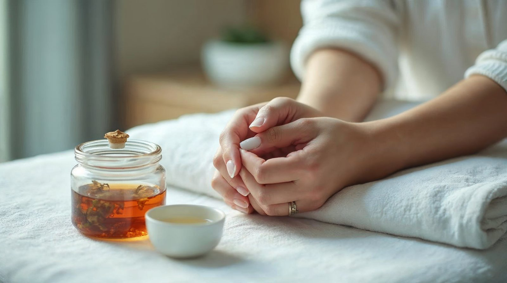
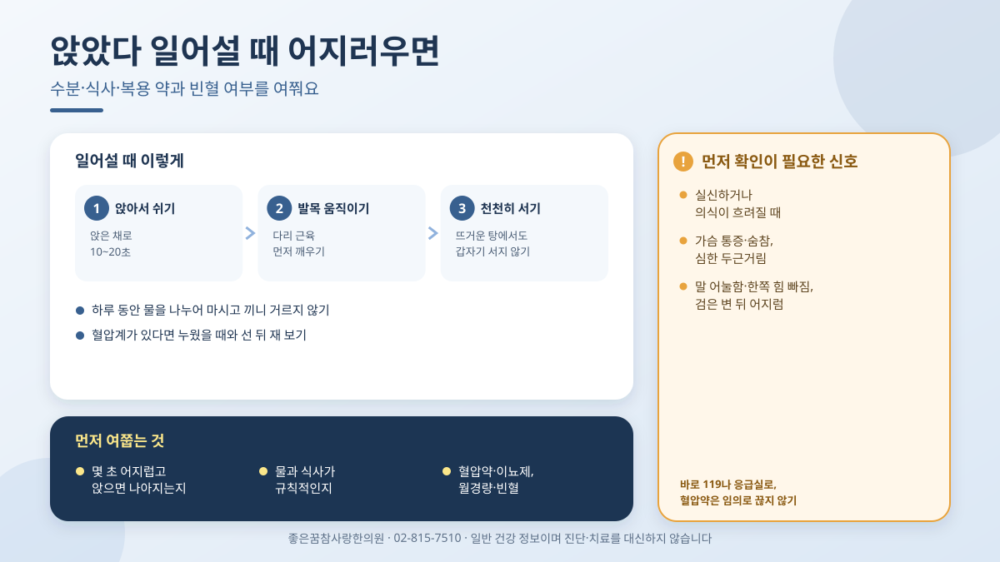

이종호 한의사 감수좋은꿈참사랑한의원 대표원장 (한의사 면허번호 19769)발행 2026-11-26 · 수정 2026-11-26
이 글의 차례
바닥에 앉아 아이 양말을 신기다 벌떡 일어서는 순간 눈앞이 하얘지고, 식탁 모서리를 붙잡은 채 몇 초를 버틴 적이 있으신가요? 이런 어지럼은 몸이 자세 변화를 따라잡는 데 한 박자 늦어서 생기는 경우가 많습니다. 그래서 저는 물과 식사, 잠, 드시는 약, 빈혈 가능성부터 하나씩 살핍니다.
다만 정신을 잃은 적이 있거나, 가슴 통증이나 심한 두근거림이 함께 왔거나, 말이 어눌해지고 한쪽 힘이 빠졌다면 이야기가 다릅니다. 그때는 이 글을 끝까지 읽기보다 가까운 응급실로 먼저 가셔야 합니다.
진료실에서 이런 이야기를 참 자주 듣습니다. 대개는 잠깐이니 괜찮겠지 하고 넘기시다가, 넘어질 뻔한 날이 생기고 나서야 걱정이 되어 오십니다. 그동안 혼자 벽을 짚으며 몇 번이나 참으셨을까 싶습니다.
왜 일어설 때만 어지러울까요
누워 있거나 앉아 있다가 일어서면 몸속의 피가 중력을 따라 다리와 배 쪽으로 한꺼번에 쏠립니다. 그러면 몸은 몇 초 안에 심장을 조금 더 빨리 뛰게 하고 혈관을 조여, 피를 다시 머리 쪽으로 올려 보냅니다. 평소에는 이 일이 워낙 빨라서 알아채지도 못하지요.
그런데 이 조절이 한 박자 늦는 날이 있습니다. 그 몇 초 동안 머리로 가는 피가 잠깐 모자라면 눈앞이 하얘지거나 캄캄해지고, 귀가 멍해지고, 다리에 힘이 빠집니다.
앉거나 누우면 금세 가라앉는 것도 그래서입니다. 피를 머리까지 올려 보내는 일이 한결 쉬워지니까요. 버티고 서 있을수록 오래 가고, 그러다 휘청하는 일이 생깁니다.
한 박자가 늦어지는 이유는 여러 가지입니다. 몸 안을 도는 물이 모자라면 올려 보낼 양 자체가 적습니다. 물을 적게 마신 날, 땀을 많이 흘린 날, 설사를 한 뒤, 술 마신 다음 날이 그렇습니다.
커피나 차만 드시고 물은 거의 안 드시는 분도 생각보다 많습니다. 하루에 물을 몇 잔 드시느냐고 여쭈면 한참 생각하시다가 웃으시는 분이 적지 않습니다.
혈관이 넓어져 있을 때도 그렇습니다. 뜨거운 탕이나 사우나에 오래 있다 일어설 때, 배불리 먹은 직후 피가 배 쪽으로 몰려 있을 때입니다. 오래 서서 일하거나 꼼짝 않고 줄을 서 있을 때도 다리에 피가 고이기 쉽습니다.
드시는 약도 꼭 살펴야 합니다. 혈압약과 이뇨제는 물론이고 전립선 약, 잠을 돕는 약, 일부 우울증 약처럼 혈압이나 혈관에 영향을 줄 수 있는 약이 있습니다. 약을 새로 시작했거나 용량이 바뀐 뒤 어지럼이 늘었다면 그 날짜가 단서가 됩니다.
피가 모자란 경우도 있습니다. 월경량이 많은 시기, 끼니를 줄여 체중을 빼는 중, 위장 어딘가에서 조금씩 피가 새는 경우처럼 빈혈이 있으면 같은 자세 변화에도 어지럼을 더 쉽게 느낍니다.
빈혈인지는 혈액 검사로 확인해야 알 수 있습니다. 혀 색이 희미해 보인다고, 얼굴이 창백하다고 빈혈이라고 단정할 수는 없고, 원인을 찾는 일은 내과 진료가 먼저입니다.
그 밖에 오래 앓아누웠다 일어난 뒤, 나이가 들어 조절이 더뎌진 경우, 당뇨를 오래 앓은 경우, 심장 리듬에 문제가 있는 경우도 있습니다. 그래서 저는 이 어지럼을 가볍게 넘기지도, 지나치게 겁내지도 않으려 합니다. 하나씩 확인해 가면 됩니다.
한의학 책에서는 어지럼을 현훈(眩暈)이라고 불러 왔습니다. 눈앞이 아찔하고 캄캄해지는 것을 현(眩), 빙빙 도는 것을 훈(暈)으로 나누어 적었지요. 옛 의사들도 이 둘을 한 가지 어지럼으로 뭉뚱그리지 않았던 셈입니다.
일어설 때 핑 도는 어지럼은 대개 현에 가깝습니다. 저는 이런 어지럼을 볼 때 머리만 보지 않고 먹는 것과 자는 것, 몸의 온기와 기운을 함께 봅니다. 쉽게 지치고 손발이 찬 분, 입맛이 없어 끼니가 들쭉날쭉한 분에게서 자주 겹쳐 보이기 때문입니다.
주변이 빙빙 도는 어지럼은 귀 안쪽의 균형 기관과 관련된 경우가 많아 살피는 순서가 다릅니다. 내 어지럼이 어느 쪽에 가까운지 헷갈리신다면 어지럼이 빙빙 도는지, 아찔한지는 어떻게 구분해서 전하나요? 글을 먼저 읽어 보셔도 좋습니다.
예를 들면 이런 경우입니다
어느 한 분의 이야기가 아니라, 진료실에서 자주 마주치는 모습을 몇 가지 그려 보겠습니다.
예를 들어 아침은 거르고 커피 두 잔으로 오전을 버틴 뒤, 점심 무렵 의자에서 일어설 때마다 눈앞이 캄캄해지는 경우가 있습니다. 이런 분께는 어지럼보다 그날 물을 몇 잔 드셨는지, 전날 몇 시에 잠드셨는지를 먼저 여쭙습니다.
하루 종일 앉아 공부하는 수험생에게서도 비슷한 모습을 봅니다. 끼니는 편의점에서 대충 넘기고, 화장실 가기 귀찮아 물도 덜 마시고, 늦게까지 버티다 잠이 짧아진 주에 어지럼이 잦다는 이야기를 자주 듣습니다.
예를 들어 혈압약을 바꾸거나 용량을 올린 뒤 몇 주 사이에 아침마다 일어서다 휘청한다는 어르신도 계십니다. 이때 저는 약을 탓하기 전에 언제 무엇이 바뀌었는지 날짜부터 정리해 드립니다.
그 메모를 들고 처방한 의사와 상의하시도록 돕고, 그동안 넘어지지 않는 방법을 먼저 챙깁니다. 약을 바꾸는 일은 그 약을 처방한 의사의 몫이고, 제 몫은 그 사이의 하루를 안전하게 지나가시도록 돕는 일입니다.
예를 들어 월경량이 많은 시기에 식사량까지 줄였더니 계단을 오를 때 숨이 차고, 일어설 때마다 아찔하다는 분도 있습니다. 이런 경우에는 빈혈 검사를 받아 보셨는지부터 여쭙고, 아직이라면 내과 혈액 검사를 먼저 권합니다.
검사 결과를 가지고 오시면 그 숫자와 함께 식사와 잠, 몸의 온기를 짚어 봅니다. 숫자가 같아도 하루를 보내는 모습은 사람마다 다르기 때문입니다.
누워서 고개를 돌리거나 돌아누울 때 빙글 도는 어지럼이라면 이야기가 조금 다릅니다. 그런 경우는 누워서 고개를 돌리거나 일어날 때 빙글 도는 어지럼이 있을 때는 어떻게 하나요? 글을 참고해 주세요.
먼저 이렇게 여쭙니다
처음부터 정확하게 설명하지 못하셔도 괜찮습니다. 제가 하나씩 여쭙겠습니다. 아래 질문을 미리 떠올려 보시면 스스로 점검해 보는 데도 도움이 됩니다.
- 앉았다 일어설 때, 누웠다 일어날 때 중 언제 주로 어지러운가요? 몇 초 만에 가라앉나요?
- 오늘 물은 몇 잔 드셨나요? 커피나 차로만 목을 축이지는 않으셨나요?
- 끼니를 자주 거르거나 식사량을 크게 줄이고 계신가요?
- 혈압약, 이뇨제, 전립선 약, 수면제처럼 드시는 약이 있나요? 최근 바뀐 약은요?
- 월경량이 많거나 빈혈이라는 말을 들은 적이 있나요? 변이 검게 나온 적은요?
- 뜨거운 탕, 사우나, 술, 과식 뒤에 더 잦은가요?
- 넘어지거나 넘어질 뻔한 적이 있나요?
두세 가지가 겹친다면 그 겹친 자리부터 함께 보면 됩니다. 반대로 어느 항목에도 해당하지 않는데 어지럼이 잦다면, 다른 원인은 없는지 확인하는 쪽에 더 무게를 둡니다.
일상에서 먼저 해 볼 수 있는 것
가장 먼저 바꿀 것은 일어서는 순서입니다. 저는 자리에서 일어나실 때 먼저 앉아서 숨을 고르시고, 다리에 힘이 들어오는 것을 느낀 뒤 천천히 일어서시라고 말씀드립니다. 어르신께도, 젊은 분께도 같은 말씀을 드립니다.
- 누웠다 일어날 때는 옆으로 돌아누워 팔로 짚고 앉은 뒤, 침대 끝에 걸터앉아 10~20초 쉬기
- 일어서기 전에 발목을 위아래로 열 번쯤 까딱이고 주먹을 몇 번 쥐었다 펴기
- 선 채로 아찔하면 버티며 걷지 말고 벽이나 의자를 붙잡고 그 자리에 바로 앉기
- 아침에 일어나면 물 한 잔, 커피를 마셨다면 물도 한 잔 더
- 뜨거운 탕은 짧게, 나올 때는 가장자리에 앉아 잠시 쉬었다가 천천히
물은 한꺼번에 많이 마시기보다 하루 동안 나누어 드시는 편이 좋습니다. 다만 심장이나 콩팥 질환으로 물 양을 조절하고 계시다면 담당 의사의 안내가 먼저입니다.
끼니는 거르지 않되, 한 번에 많이 드시기보다 양을 나누는 쪽으로 바꿔 보세요. 배불리 먹은 직후에 바로 일어나 움직여야 한다면 잠시 앉아 있다가 천천히 일어서시면 됩니다.
술은 어지럼을 키우기 쉬워서, 술 마신 다음 날 아침에는 일어서는 순서를 더 천천히 지켜 주세요. 오래 서서 일하는 날에는 가만히 서 있기보다 발뒤꿈치를 들었다 내리거나 제자리에서 체중을 옮기며 다리를 움직여 주시면 좋습니다.
한 번에 다 바꾸려고 하면 오래가기 어렵습니다. 저는 큰 목표를 잘 드리지 않는 편입니다. 일어서는 순서 하나만 먼저 몸에 붙여 보시고, 그게 익숙해지면 물 한 잔을 더하는 식으로 가시면 됩니다.
넘어지지 않는 것이 먼저입니다
일어설 때의 어지럼에서 제가 가장 걱정하는 것은 어지럼 그 자체보다 넘어지는 일입니다. 몇 초의 아찔함은 지나가지만, 그 몇 초에 바닥에 부딪히면 이야기가 길어집니다. 뼈가 약해지기 쉬운 연세라면 더 그렇습니다.
크게 넘어지면 한동안 누워 지내게 되고, 누워 있는 동안 다리 힘은 더 빠집니다. 그러면 일어설 때 더 휘청이고, 넘어질까 겁이 나 바깥에 덜 나가게 됩니다. 저는 이 고리가 시작되지 않게 막는 일을 치료만큼 무겁게 봅니다.
밤에 화장실 가실 때가 특히 조심스럽습니다. 자다가 깨서 어두운 데서 급히 일어나시기 때문입니다. 침실에서 화장실까지 가는 길에 작은 수면등을 켜 두세요.
저희 어머니 댁에도 수면등을 달아 드렸는데, 밤에 화장실 가실 때 큰 도움이 되었습니다. 내 집이라도 어두우면 넘어집니다.
욕실 앞과 바닥에는 미끄럼 방지 매트를 깔고, 가는 길의 문턱과 전선, 걸레는 치워 두세요. 밤에 소변을 보실 때는 서 있기보다 앉아서 보시는 편이 안전합니다. 휴대전화는 늘 손 닿는 곳에 두시고요.
넘어지면서 머리를 부딪혔다면 그 뒤 두통이나 구토, 졸림이 생기는지 꼭 살펴봐 주세요. 그런 모습이 보이면 바로 가까운 응급실로 가셔야 합니다. 혼자 지내신다면 괜찮아 보여도 가족에게 꼭 알려 두세요.
계단이 많은 길을 다니신다면 지하철역 계단을 오르내릴 때 어지럽고 다리가 휘청할 때는 어떻게 살피나요? 글에 난간 잡기와 외출 전에 챙길 것을 따로 적어 두었습니다.
상도동처럼 언덕과 계단이 많은 동네에서는 어지러운 날 서두르지 않는 것만으로도 마음이 한결 놓입니다. 진료 날에도 어지럽다면 시간에 쫓기지 마시고 천천히 오세요.

한의원에서 함께 살필 수 있는 경우
내과나 신경과에서 확인할 것을 확인한 뒤에도 일어설 때의 어지럼이 이어지는 분들이 있습니다. 검사에서 큰 이상이 없다는 말에 안심은 되는데, 하루하루는 여전히 아찔하신 거지요. 그럴 때 한의원에서 함께 살필 수 있는 부분이 있습니다.
- 병원 검사에서 급한 원인은 없다고 들었지만 일어설 때 어지럼이 잦은 경우
- 어지럼과 함께 쉽게 지치고 손발이 차며, 입맛이 들쭉날쭉한 경우
- 늦게 자거나 잠이 얕은 날이 많아 다음 날 어지럼이 더 잦은 경우
- 다리 힘이 빠져 걸음이 불안하고, 넘어질까 걱정되는 경우
좋은꿈참사랑한의원에서는 어지럼이 오는 상황과 드시는 약을 먼저 확인하고, 진맥을 기본으로 하고 필요하다고 판단될 때 설진을 더해 살핍니다. 그 뒤 침이나 한약 상담 가운데 맞는 방법을 함께 정합니다.
처음 오시면 어지럼이 오는 동작과 이어지는 시간, 함께 오는 증상을 듣고 급히 확인해야 할 신호가 없는지부터 봅니다. 받으신 혈액 검사나 심전도 결과가 있으면 함께 놓고 봅니다.
그다음 양손을 올려 달라고 말씀드립니다. 저는 처음 오신 분이든 다시 오신 분이든 모든 분께 맥을 짚습니다. 맥을 짚는 동안 잠과 식사, 대변, 손발의 온기를 함께 여쭙습니다.
필요하다고 판단되면 혈압과 맥박도 잽니다. 손끝으로 느끼는 맥과 기계가 보여 주는 숫자는 서로 다른 이야기를 해 주기 때문입니다. 서둘러 오시면 숫자가 달라지기 쉬워, 잠시 앉아 숨을 고르신 뒤에 잽니다.
필요하면 원내 혈액 검사기로 기본 수치를 확인하기도 합니다. 다만 수치에 따른 진단과 약 조절은 내과에서 받으시도록 안내합니다. 약과 관련이 의심되면 처방한 의사와 먼저 상의하시도록 말씀드립니다.
공복으로 오시면 치료 중에 어지러울 수 있어 가볍게라도 드시고 오시길 권합니다. 치료를 마치고 일어나실 때는 잠시 앉아 계셨다가 천천히 움직이시도록 안내합니다.
귀가하시기 전에는 일어서는 순서와 다음 진료까지 적어 오실 것을 말씀드립니다. 다시 오시면 지난번 이후 어지럼이 몇 번 있었는지, 어떤 날이었는지부터 이어서 여쭙습니다.
이렇게 기록해 오시면 상담이 쉬워집니다
어지럼은 정작 진료실에 오시는 날에는 멀쩡한 경우가 많습니다. 그래서 기억보다 기록이 힘이 됩니다. 꼼꼼하지 않아도 됩니다. 휴대전화 메모장에 한 줄씩이면 충분합니다.
- 어지러웠던 날짜와 시각, 그때 하던 동작
- 이어진 시간(몇 초, 몇 분)과 함께 온 느낌: 눈앞이 캄캄함, 귀 먹먹함, 식은땀, 두근거림
- 그날 마신 물과 커피, 거른 끼니, 전날 잠든 시각
- 드시는 약 이름과 최근 바뀐 날짜, 최근 혈액 검사 결과지
집에 혈압계가 있다면 이렇게 재 보셔도 좋습니다. 누워서 5분쯤 쉰 뒤 한 번 재고, 일어나서 1분 뒤와 3분 뒤에 한 번씩 더 재어 혈압과 맥박을 함께 적습니다. 누웠을 때와 섰을 때의 차이가 쓸모 있는 단서가 됩니다.
다만 일어서서 잴 때는 꼭 벽이나 의자 옆에서, 가능하면 가족이 곁에 있을 때 재세요. 재는 도중에 아찔하면 숫자보다 몸이 먼저입니다. 바로 앉으시고 그날은 거기서 멈추세요.
같은 시간대에 며칠 잰 기록은 진료실에서 한 번 잰 숫자보다 흐름을 보기에 좋습니다. 손목 혈압계라면 손목을 심장 높이에 두고 재 주세요.
이런 증상은 먼저 확인이 필요합니다
일어설 때의 어지럼은 대부분 생활을 살피며 지켜볼 수 있지만, 기다리면 안 되는 경우가 있습니다. 아래 신호가 있다면 이 글을 더 읽기보다 먼저 움직이셔야 합니다.
- 정신을 잃고 쓰러졌거나, 쓰러질 듯 의식이 흐려진 경우
- 가슴 통증, 숨참, 심한 두근거림이 어지럼과 함께 온 경우
- 말이 어눌해지거나 얼굴·팔다리 한쪽에 힘이 빠진 경우, 갑자기 앞이 가려지거나 겹쳐 보이는 경우
- 검은 변을 보거나 피를 토한 뒤 어지럽고 기운이 빠지는 경우
- 넘어지면서 머리를 부딪힌 뒤 두통, 구토, 졸림이 생긴 경우
이런 경우에는 한의원 진료를 기다리지 말고 가까운 응급실로 가세요. 증상이 금방 사라졌더라도 확인이 필요할 수 있습니다.
누워 있거나 앉아 있을 때도 어지럽거나, 걷거나 힘을 쓰는 중에 어지럼이 온다면 일어설 때의 어지럼과는 다르게 보아야 합니다. 이런 경우에는 미루지 말고 내과 진료를 서둘러 받으세요.
혈압약이나 이뇨제, 그 밖에 드시는 약은 처방한 의사와 상의 없이 줄이거나 끊지 않습니다. 약 때문인 것 같아도 스스로 끊으면 혈압이 갑자기 오르는 등 다른 문제가 생길 수 있습니다. 약이 바뀐 날짜를 적어 처방한 의사와 먼저 상의해 주세요.
몇 초짜리 어지럼이라 남에게 말하기도 애매하셨을 겁니다. 그래도 그 몇 초를 벽을 짚고 버텨 오셨다면, 몸이 보내는 신호를 이미 듣고 계셨던 겁니다. 다음에 오시면 마지막으로 어지러웠던 날, 그날 무엇을 드셨고 몇 시에 주무셨는지부터 여쭙겠습니다.

여쭙는 것
- 앉았다 일어설 때, 누웠다 일어날 때 중 언제 주로 어지러운가요? 몇 초 만에 가라…
- 오늘 물은 몇 잔 드셨나요? 커피나 차로만 목을 축이지는 않으셨나요?
- 끼니를 자주 거르거나 식사량을 크게 줄이고 계신가요?
생활에서 해 볼 것
- 누웠다 일어날 때는 옆으로 돌아누워 팔로 짚고 앉은 뒤, 침대 끝에 걸터앉아 10~…
- 일어서기 전에 발목을 위아래로 열 번쯤 까딱이고 주먹을 몇 번 쥐었다 펴기
- 선 채로 아찔하면 버티며 걷지 말고 벽이나 의자를 붙잡고 그 자리에 바로 앉기
한의원에서 함께 살필 것
- 병원 검사에서 급한 원인은 없다고 들었지만 일어설 때 어지럼이 잦은 경우
- 어지럼과 함께 쉽게 지치고 손발이 차며, 입맛이 들쭉날쭉한 경우
- 늦게 자거나 잠이 얕은 날이 많아 다음 날 어지럼이 더 잦은 경우
먼저 확인이 필요한 신호
- 정신을 잃고 쓰러졌거나, 쓰러질 듯 의식이 흐려진 경우
- 가슴 통증, 숨참, 심한 두근거림이 어지럼과 함께 온 경우
- 말이 어눌해지거나 얼굴·팔다리 한쪽에 힘이 빠진 경우, 갑자기 앞이 가려지거나 겹쳐…
한눈에 보는 표
| 구분 | 핵심 |
|---|---|
| 여쭙는 것 | 앉았다 일어설 때, 누웠다 일어날 때 중 언제 주로 어지러운가요? 몇 초 만에 가라앉나요? 오늘 물은 몇 잔 드셨나요? 커피나 차로만 목을 축이지는 않으셨나요? |
| 생활에서 해 볼 것 | 누웠다 일어날 때는 옆으로 돌아누워 팔로 짚고 앉은 뒤, 침대 끝에 걸터앉아 10~20초 쉬기 일어서기 전에 발목을 위아래로 열 번쯤 까딱이고 주먹을 몇 번 쥐었다 펴기 |
| 한의원에서 함께 살필 것 | 병원 검사에서 급한 원인은 없다고 들었지만 일어설 때 어지럼이 잦은 경우 어지럼과 함께 쉽게 지치고 손발이 차며, 입맛이 들쭉날쭉한 경우 |
| 먼저 확인이 필요한 신호 | 정신을 잃고 쓰러졌거나, 쓰러질 듯 의식이 흐려진 경우 가슴 통증, 숨참, 심한 두근거림이 어지럼과 함께 온 경우 |
자주 묻는 질문
일어설 때 잠깐 어지러운 건 누구나 그런 것 아닌가요?
가끔 있고 몇 초 안에 가라앉는다면 흔한 일일 수 있습니다. 다만 자주 되풀이되거나 넘어질 뻔했다면 물과 식사, 드시는 약, 빈혈 같은 원인을 확인해 보시길 권합니다.
혈압약 때문인 것 같은데 약을 줄여도 될까요?
처방한 의사와 상의 없이 줄이거나 끊지 않습니다. 약이 바뀐 날짜와 어지러웠던 날을 적어 가시면 상의하기가 한결 쉬워집니다.
빈혈 검사는 어디서 받나요?
내과에서 혈액 검사로 확인하시길 권합니다. 한의원에서도 필요하다고 판단될 때 기본 수치를 보기도 하지만, 진단과 약은 내과에서 받으시도록 안내합니다.
부모님이 밤에 화장실 가시다 자주 휘청하세요.
침대 끝에 앉아 잠시 쉬었다 일어서기와 가는 길에 수면등 켜 두기부터 챙겨 주세요. 드시는 약은 모두 모아 담당 의사와 상의하시고, 넘어져 머리를 부딪혔다면 가까운 응급실로 가세요.
좋은꿈참사랑한의원은 재진 때 지난번 이야기부터 이어서 여쭙니다. 진료시간과 예약은 오시는 길에서 확인하세요.
어디서 상담받을 수 있나요?
좋은꿈참사랑한의원은 서울 동작구 만양로2길 2 신성빌딩 3층·5층(서울 동작구 상도동, 7호선 상도역 3번 출구 근처)에 있습니다. 한의사 3명(이종호 대표원장, 조영기 수석진료원장, 정원영 진료원장)이 진료합니다. 진료시간은 평일 09:30~20:00(점심 13:00~14:00), 토·일·공휴일 09:30~15:00이며, 방문 전 전화로 확인을 권합니다. 예약은 네이버 예약, 카카오톡 상담, 전화 02-815-7510로 받습니다.
이 글은 일반적인 건강 정보이며 개인의 진단이나 치료를 대신하지 않습니다. 증상이 있거나 복용 중인 약이 있다면 진료를 통해 확인하세요. 치료 효과는 개인마다 다를 수 있습니다.
작성 기준: 일반적으로 알려져 있는 건강 정보를 참고해 정리했습니다(대표원장 감수). 증상 기록은 1~2주 동안 하루 1회, 비슷한 시간에 적어 오시면 지난 상태와 비교하기 쉽습니다.